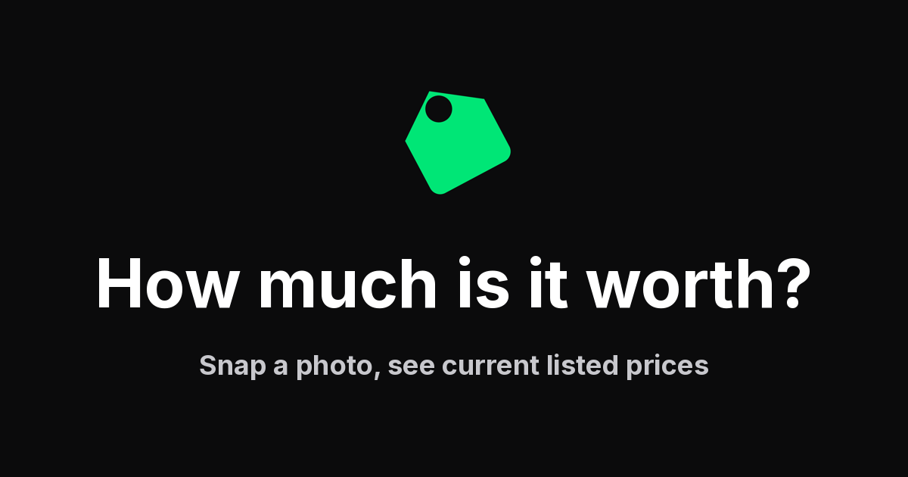

A box comes down from a cupboard, or a relative hands you a bag of "old bits," and someone asks the obvious question: how much is it worth? You could guess. You could scroll through a few headlines and hope your pile matches a famous sale. That's how people keep junk they thought was valuable, and how they give away the one piece that actually was.
If you want to find out what your stuff is worth, start with the objects in front of you, not with a name you half remember. Photograph them, confirm what they are, and look at a current listed range. That's what  How Much Is It Worth: Scanner is for.
How Much Is It Worth: Scanner is for.
The scanner is built for the messy, real version of the question. Take or upload up to three photos of an item. The front is enough to start. A second shot of the back, a label, a hallmark, or a serial number helps pin down the exact version, which is often where the value actually sits.
You see the identification first. If the name, model, or year looks off, you correct it before any price lookup. Then you get a Worth about figure, the listed range around it, a confidence level, and the live listings behind the number, so you can open them yourself. If the data is thin, it's labelled as a rough estimate. The product won't invent a precise figure to fill a gap, and it isn't a certified appraisal or an offer to buy.
That is the difference between finding out what your stuff is worth and guessing what it might be worth. The number is attached to this watch, this coin, this card, in the condition you can see, not to a story about a similar-sounding item.
Want to try it? Snap a photo at https://howmuchisitworth.today/. The website includes one free web scan a day. Get the free iPhone app at https://apps.apple.com/app/id6832980231, with 3 free scans plus 1 a week. On Android? Check https://howmuchisitworth.today/ for the Android release.
Once a result is on the screen, you can adjust the condition (Good, Near Mint, Graded, and more) and watch the value update. If a figure looks surprisingly high, check whether the comps are graded, boxed, or a different edition. If it looks surprisingly low, check whether a date, hallmark, or set mark was missed.
If you decide to sell, you can copy a ready-made listing in a tap, with three prices to choose from: Quick sale, Fair price, or Top dollar. Save each scan to a collection if you're working through a whole box and want a running picture of what you own.
The app covers the kinds of things that usually turn up in those boxes: coins and banknotes, trading and sports cards, antiques, jewelry, gold and silver, watches, stamps, comics, books, vinyl, toys, handbags, sneakers, phones, cameras, games, furniture, and other everyday household finds. If people buy and sell it, the app can usually tell you how much it's worth. Rare one-offs get a wider range and a tip to get a professional appraisal.
A listed range is still a spread of asking prices. A shop offer or a final sale can sit below it. That's useful information, not a reason to ignore the range. Use it to sort the pile: keep, list, or get a second opinion on the unusual pieces. Don't force one number onto the whole box.
The app is free to start. You get 3 free scans plus 1 a week. Optional Premium is $4.99 a week (no trial), or $29.99 a year with a 3-day free trial on the yearly plan only. Prices may vary by store and country.
If you're asking how much is it worth, you don't have to guess your way through the box. Check it at https://howmuchisitworth.today/, or download the app and scan your first item free.
I also wrote a companion post that stays with a single item in your hand: this companion guide.